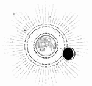

CAPÍTULO 52
Abrilis 1787
Cuando Helena despertó, se descubrió a sí misma en una cama enorme, se encontraba en una gran habitación y, al otro lado de las ventanas, se alzaban las montañas Novis, bañadas por la luz dorada del amanecer.
Estaba envuelta en sábanas con olor a enebro y en los brazos de Kaine. No recordaba cómo había llegado hasta allí.
Volvió a mirar la habitación. Por el ángulo de la ciudad, supo que estaba en la isla Oeste. Seguramente se tratara de una de las torres tan alargadas que desaparecían entre las nubes.
Siempre había dado por sentado que Kaine viviría en una finca en las afueras o en una de esas casas antiguas de la ciudad. ¿Por qué preferiría estar en un sitio como ese?
Él estaba tumbado; sus brazos la envolvían posesivamente, como si así no pudieran robársela, aunque mantenía un semblante plácido mientras dormía. Helena lo observó detenidamente.
¿Qué le había hecho?
Kaine Ferron era un dragón, como todos sus antepasados. Posesivo hasta la autodestrucción. Ermitaño y letal, pero la sostenía entre sus brazos como si fuera de su propiedad. Helena sintió pavor al notar la tentación de ceder, de permitir que la tuviera y de amarlo.
La necesidad de amar a los demás y ese anhelo desesperado por que la correspondieran… Hacía mucho que se había rendido, había guardado ese sentimiento bajo llave y lo había enterrado para dar paso a la frialdad de la lógica, al realismo y a las elecciones prácticas de la guerra. Esto la iba a llevar a la ruina.
Tenía que marcharse antes de que Kaine despertara.
Intentó despegarse tal como había hecho en otras ocasiones, pero esta vez Kaine abrió los ojos. En un primer momento, la atrajo hacia sí, pero entonces vio su expresión temerosa.
Parpadeó un par de veces y la dejó marchar.
Helena se quedó donde estaba.
El miedo y la rabia que él le inspiraba el año anterior se habían desvanecido por completo. Aún percibía el peligro, tal vez incluso con más nitidez, pues sabía lo letal que era. Sin embargo, de alguna manera, saberlo hacía que le diera menos miedo. Ahora sabía además lo mucho que se había contenido. A pesar de todo lo que había conseguido, Kaine Ferron se estaba controlando.
—Esto ha sido un error —dijo Helena—. No debería haber venido aquí.
Kaine tragó saliva y desvió la mirada.
—No te preocupes —repuso con calma—. No te complicaré las cosas. Querías estar con alguien y yo estaba disponible. Sé que no significó nada.
Al oírlo, Helena contuvo la respiración y tragó saliva. Kaine no era alguien sin más. Para ella era…
Ese era el mayor error de todo, lo que la aterraba.
Antes de que pudiera esbozar una mentira para protegerse, algo en su rostro la traicionó. Sus ojos siempre la delataban.
Porque Kaine, cuyo semblante parecía abatido, adoptó una expresión de triunfo. Volvió a atraerla hacia sí con una voracidad y una pasión que atravesó el aire como un relámpago.
Sin posibilidad de huir, Helena regresó a sus brazos, y los labios de Kaine buscaron los suyos. Cualquier rastro de miedo, culpa o decisión se deshizo en el aire. Lo único en lo que pensaba era en lo mucho que deseaba estar allí, en que él la tocara. Kaine era puro fuego, y ella ya se había consumido.
—Eres mía —murmuró contra sus labios. Deslizó los dedos por su garganta y los enredó entre los mechones de cabello, acercándola todavía más.
No fue como la noche anterior. No se trató de un acto de consuelo, sino de dominación.
Helena sintió la boca ardiente de Kaine sobre sus labios, y después sus dientes dándole mordiscos en la mandíbula y en la garganta, también en los hombros. Ella enredó los dedos en su cabello y arqueó la espalda bajo sus manos. Intentó no gemir de lo desesperadamente que lo deseaba, agradecida de no tener que pedirlo. Kaine la acercó a su cuerpo, la envolvió con los brazos y se colocó encima. Cuando se hundió en su interior con una fuerte embestida, Helena sintió su aliento caliente en el cuello.
La poseyó con dureza, como si quisiera demostrarle que ahí era donde debía estar, como si necesitara asegurarle que nunca podría negar cómo la hacía sentir.
Helena sentía su resonancia vibrando en sus propias terminaciones nerviosas. Kaine no se molestó en ocultarlo: estaba sintonizado con ella, y eso le provocaba unas sensaciones y un placer desbordantes.
Cuando Kaine se dejó llevar y su rostro volvió a mostrar sus emociones al desnudo, ya no había un corazón roto, sino una declaración de posesión y triunfo. La atrajo hacia sí, apretándola contra su pecho.
—Eres mía. Juraste serlo. Ahora y después de la guerra. Yo me encargaré de cuidar de ti. No permitiré que nadie te haga daño. No tienes por qué sentirte sola. Porque eres mía.
Helena sabía que debía marcharse, pero se perdió en el momento.
Estaba atrapada en el peligroso abrazo de Kaine Ferron, y se sentía como si estuviera en casa.
Se durmió entre sus brazos, como si el mundo hubiera dejado de existir, y solo despertó un instante al sentir sus dedos acariciándole el hombro. Cuando alzó la vista, lo vio observándola con los ojos oscurecidos.
Helena se acurrucó bajo esa caricia y lo besó ahí donde latía su corazón. Cuando Kaine le tomó la mano, Helena sintió su resonancia en sus propios dedos y volvió a quedarse dormida.
Al despertarse de nuevo, estaba a punto de hacerse de noche y las montañas se habían teñido de un morado y un rojo bruñido que marcaban el descenso de Sol.
Kaine estaba vestido, pero seguía sentado a su lado, mirándola dormir con los dedos entrelazados con los suyos, como si no tuviera nada más que hacer.
—¿Cómo es posible que estés aquí? —preguntó Helena, entre perpleja y exhausta. Por algún motivo, se sentía más cansada que antes, como si su cuerpo, al fin, hubiera recordado cómo se dormía y ahora pretendiera recuperar todos los años de privación.
Kaine arqueó una ceja.
—Vivo aquí. ¿Pensabas que mi residencia habitual era la habitación del pánico del Reducto?
Helena negó con la cabeza y se quedó tumbada de espaldas. Ya no le dolían las manos.
—No, pero ¿cómo es posible que puedas pasar un día entero en la cama conmigo? ¿No eres general o algo así? ¿No tienes reuniones o crímenes que cometer?
En lugar de responder, Kaine se le echó encima hasta dejarla tendida bajo su cuerpo. Con sus brazos alargados, le sostuvo las manos por encima de la cabeza y luego la besó.
—Estoy de descanso —contestó mientras la dejaba sin respiración—. Un concepto que me temo que nadie te ha explicado. —Entonces la soltó y se sentó para admirar las vistas—. A mi madre la torturaron en nuestra casa de las afueras, y también asesinaron allí a nuestros empleados. Después, nos trasladamos a nuestra residencia de la ciudad, y ahí fue donde murió. Quería ir a un sitio distinto, que estuviera alejado de todo eso.
Helena se incorporó.
—Lo siento, no debería haber preguntado. Simplemente jamás te imaginé viviendo a esta altura —comentó. Luego estiró la mano y la posó en su mejilla. Kaine apoyó la cabeza en la palma de su mano y cerró los ojos durante un instante; los mechones de su cabello le rozaron las yemas de los dedos.
Sin embargo, levantó la cabeza de repente.
—Bueno, es lo más práctico. Amaris echa a volar desde la azotea. Ahora se le da mejor, pero le ha costado mucho aprender a hacerlo.
—¿Amaris? —repitió Helena lentamente.
—La quimera. La viste anoche.
Helena parpadeó un par de veces. El recuerdo de un lobo alado, de proporciones imposibles, resurgió en su mente.
—Creía que… estaba alucinando.
Kaine la miró fijamente.
—Te dije que me iban a dar una quimera.
—Bueno, sí, pero di por hecho que sería algo… más pequeño, y, como no volviste a mencionarlo, supuse que habría muerto.
Kaine se encogió de hombros.
—Bueno, al principio era pequeña. Cuando llegó, tenía el tamaño de un potro.
—¿Qué es en realidad?
—Bennet no nos ha dado muchos datos al respecto. Tiene mucha genética de lobo norteño mezclada con algo de caballo de guerra. Aunque no sé de dónde sacó las alas.
—¿Y está… domada?
El chico negó con la cabeza.
—No, simplemente me ha cogido cariño, pero deberías conocerla. Hacía tiempo que quería presentártela, pero nunca encontré el momento oportuno. Ven conmigo.
Helena no se movió, todavía no quería ir a ninguna parte. Algo había cambiado entre ellos: la tensión y la cautela se habían desvanecido por completo.
Nunca se habían tratado con suavidad, ni siquiera cuando eran más jóvenes.
Alejados del resto del mundo, Helena sentía que por fin podía verlo tal como era, y no a través del filtro impuesto por los intereses de la Llama Eterna.
A pesar de estar en una habitación impersonal, a Helena le parecía que era justamente el sitio donde podían existir. No había ni un solo objeto que tuviera un significado especial. Era algo temporal, sin ataduras.
—¿Cuándo te diste cuenta de que no sabía que debías morir? —preguntó en vez de ponerse en pie.
Kaine soltó un largo suspiro.
—El primer día que fuiste al Reducto. Por la cara que pusiste, supe que tú creías que era para siempre.
La chica sintió que se le cerraba la garganta. Kaine apartó la mirada.
—Al principio me pareció… divertido. Estuve esperando a que te dieras cuenta. —Helena sintió que se le ruborizaba el cuello—. Cuando te dije que deberías haber sabido que me castigarían, pensé que comprenderías que todo era una farsa, pero no lo hiciste. Luego supuse que te lo contarían esa misma noche o al día siguiente, pero tú seguiste viniendo. Imaginé que tus superiores querrían algo más, aunque para entonces ya era evidente que no te lo estaban contando todo. Yo estuve a punto de hacerlo un par de veces, pero… —suspiró—. Supongo que estaba disfrutando de que quisieras salvarme.
Helena asintió con pesadez y, con los dedos, acarició la costura de la sábana de lino.
—Crowther hizo mucho hincapié en los objetivos a largo plazo, en que debía asegurarme de que tú no perdieras el interés y en que todo era secreto, que nadie podía saberlo. Pensaba que confiaban en mí. —Se quedó callada unos segundos—. Ilva me lo contó poco antes del solsticio. Supongo que te diste cuenta.
Ella tomó su silencio como una confirmación. Se produjo una pausa en la que recordó algo más.
—Kaine, creo que tu padre no está muerto.
La miró con intensidad.
—¿Cómo?
—Cuando rescatamos a Luc, había un liche. Le dijo a Sebastian que se llamaba Atreus. Estaba custodiando la puerta de la habitación donde lo tenían retenido.
—No —replicó Kaine con voz trémula—. No. Mi padre murió. Si siguiera con vida, habría regresado. Por mi madre.
Las pupilas se le habían contraído hasta formar unos puntos nítidos de color negro. Se negaba a creerlo.
—Era un liche —repitió Helena con todo el tacto posible—. ¿Habría querido verla en ese estado?
Kaine abrió la boca en varias ocasiones, como si quisiera protestar, pero después pareció pensarlo mejor.
—¿Qué sucedió?
—Soren y Sebastian lo mataron. Se interpuso entre nosotros y Luc. Pero no tuvimos tiempo de arrancarle el talismán. ¿No sabías que era un inmarcesible?
Él negó con la cabeza.
—Creía que lo habían arrestado antes de que comenzara la guerra. —Cogió aire con una mueca sarcástica; su expresión se volvió amarga—. Así que, al final, ni siquiera fue capaz de morir por ella.
—¿Por tu madre?
Kaine asintió.
—Lo hizo por ella. Sé lo que la gente decía de ellos, los motivos por los que se casaron, pero en realidad mi padre… la adoraba. Era lo único que le daba sentido a su vida. Cuando nací y ella se puso enferma, se obsesionó con protegerla. No permitía visitas ni nada que alterara su descanso. Morrough le prometió que la curaría y viviría para siempre.
—Entonces no sabrá todo lo que sucedió después de que lo arrestaran —repuso Helena.
Los ojos de Kaine reflejaron un cansancio profundo.
—Probablemente no.
—De haberlo sabido, ¿crees que…?
Kaine negó con la cabeza.
—Estoy seguro de que me culpa a mí. Como siempre. —Se produjo un silencio, y después le lanzó una mirada a Helena—. Hablando de morir, o más bien de lo contrario, ¿podrías explicarme por qué sigo vivo?
De repente, a Helena le pareció fascinante contar los hilos de la sábana.
—El sello era un experimento fallido. Bennet se pasó semanas tratando de arreglarlo, pero no hizo más que empeorar la situación. Cuando finalmente aceptó su derrota, quiso arrancármelo del cuerpo, pero el sello consumía tanta energía del talismán que era incapaz de tocarlo. Dio por hecho que la energía se agotaría en algún momento, o que mi cuerpo acabaría descomponiéndose, y por eso me mandaron a casa, porque no querían que las posibles consecuencias contaminaran el laboratorio recién estrenado.
»Como me he recuperado milagrosamente, Bennet está intentando repetir el experimento. Hasta ahora, todos los sujetos han muerto, de una forma lenta y horrible, y no logra entender por qué soy el único que ha sobrevivido. Tú eres la única persona que nunca ha cuestionado que saliera adelante, y me gustaría saber por qué.
Se hizo un silencio que Helena rompió aclarándose la garganta.
—Tenía un amuleto de los Holdfast. Podríamos decir que era una reliquia sagrada. Ilva me lo regaló cuando me hice sanadora. Y me ayudaba.
—¿Te ayudaba? —La incredulidad era evidente en su voz.
—Me permitía… trabajar más horas —respondió esquivando su mirada—. No me cansaba ni… se desgastaba mi poder cuando lo tenía. Tus heridas eran tan graves que te estabas deteriorando más rápido de lo que tu cuerpo podía sostener. El sello estaba drenando toda tu energía. Como a mí me había funcionado, supuse que a ti también podría ayudarte, que te daría fuerzas para recuperarte.
Kaine elevó las cejas.
—¿Qué reliquia tiene semejante poder?
Helena carraspeó. Debería mentir, puesto que decir la verdad podía considerarse traición. Sin embargo, no se le ocurría ninguna mentira. Además, ya había cometido traición.
—La Gema de los Cielos —contestó—. Yo no sabía lo que era, y en realidad no es… lo que cuentan las historias. Fue el Nigromante quien la creó, pero Orion se la arrebató y la gente asumió que había sido un regalo de los cielos.
—¿Y te la dieron a ti? —Kaine entornó los ojos.
—Por lo visto, me… eligió. No funciona con la mayoría de las personas.
Kaine tenía los brazos cruzados.
—¿Y así me curaste?
Helena se limitó a asentir.
—Así te curé.
El chico quedó en silencio durante un largo rato. Helena no consiguió descifrar su expresión, no tenía forma de saber si la creía o no.
—¿Y dónde está la gema ahora?
—No la tengo —respondió evitando su mirada—. Ya no.
Kaine suspiró.
—Bueno, supongo que tiene sentido que no te dejaran quedártela después de haberla usado conmigo.
La chica forzó una sonrisa culpable. Quizá era mejor que pensase eso.
—Ilva no estaba muy contenta.
—Supongo que no. ¿Sufriste alguna consecuencia?
—Bueno, tenía que m… —tragó saliva— matarte, pero finalmente me libré de hacerlo. Así que al final todo se ha arreglado.
Consiguió esbozar otra sonrisa, pero Kaine no la correspondió. Su expresión se endureció, tornándose distante, vacía.
—¿De verdad crees que lo hemos arreglado?
La cara de Helena se descompuso y, de repente, lo recordó: esa realidad que se interponía entre ambos. Que él habría preferido que ella lo matase, que eso era lo que él había querido. En cambio, estaba sentada en su cama, diciendo con una sonrisa que todo había salido bien porque había conseguido atarlo a la vida.
—No, no quería decir eso. Lo siento.
Se apartó y se giró para buscar su ropa.
—¿Qué estás haciendo? —Kaine se inclinó y la cogió por el tobillo antes de que se levantara de la cama.
—Creo que debería irme ya —masculló Helena con un nudo en la garganta mientras intentaba liberarse de su agarre.
—¿Por qué?
Helena tenía el corazón en un puño.
—Sé que no querías nada de esto. No pretendía fingir que todo iba bien.
La expresión de Kaine se endureció, y la arrastró de nuevo hacia la cama. Helena trató desesperadamente de librarse de su agarre.
—¿Me dejas al menos… ponerme la ropa antes de enfadarte, por favor?
Kaine la miró con intensidad.
—No me refería a mí. Estaba hablando de ti.
—¿De mí? —Le resultó tan desconcertante que dejó de resistirse.
—Sí, de ti. La Resistencia se te ha enganchado como un parásito y tú crees que todo ha salido bien porque son lo bastante generosos de permitirte vivir mientras te devoran por dentro.
—No es así —replicó Helena con dureza.
—Seis años en un hospital de guerra. ¿A cuántas personas has salvado para la causa? Dudo que lo sepas. Pero ¿les parece suficiente? No. En cuanto hubo otra manera de aprovecharse de ti, te vendieron al mejor postor. Incluso a los caballos de tiro se les trata mejor; deberían haberte convertido en pegamento cuando ya no les serviste para nada más. —Soltó un bufido de desdén—. Pero supongo que siempre ha sido así. Los únicos que disfrutan de una jubilación en el campo son los sementales de guerra como los Bayard.
—Cállate —le espetó Helena, y propinó una patada para soltarse. Tenía la cara encendida de rabia—. ¿Crees que no sé que soy prescindible? Tú te has encargado de recordármelo cada vez que has tenido una oportunidad. Pero no tienes ningún derecho a enfadarte por ello, porque has formado parte de todo esto desde el principio. Tú sabías lo que estaba pasando y yo no, y aun así decidiste seguir siendo cruel. Al menos, Ilva y Crowther me manipularon por un motivo. —Apartó la mirada—. ¿Tú cuándo te has mostrado así de generoso?
Kaine se quedó callado. Helena se giró.
—Perdóname —dijo él tras unos instantes. Ella no pudo más que reír, sin alegría.
—Sí, ya te has disculpado, pero no cambias, así que no significa nada.
—Tienes razón.
Se sentó al borde de la cama y se tapó el rostro con las manos.
—También te pido disculpas por eso. Nunca quise que esto llegara tan lejos. Sabía la misión a la que te habían enviado, y yo estaba convencido de que sería inmune, pero al darme cuenta de que para ti era real, cuando vi que estaba funcionando y que estaba cayendo en mi propia trampa, hice todo lo posible para que te alejaras. No se me pasó por la cabeza que tus superiores no te avisarían.
Helena se mordió el labio.
—Creyeron que así sería más convincente.
Kaine asintió con pesar.
—Pensé que, si te trataba con crueldad, te rendirías. Que tendrías un límite y que, cuando lo alcanzaras, dejarías de… abrirte paso por mis emociones. —Se le escapó un suspiro—. Me he pasado tanto tiempo esperando que me traicionaras que no quería que me importase cuando sucediera. Quería hacerte daño, pero siento habértelo hecho.
Helena se quedó contemplando el horizonte y sacudió la cabeza lentamente.
—No sé por qué seguí intentándolo. Hubo momentos en los que vi claramente que toda esa fachada era mentira. Cuando se te olvidaba fingir, siempre parecías sentirte muy solo. Y yo también. —Bajó la vista hacia la cicatriz que tenía en la palma de la mano—. Antes creía que éramos totalmente opuestos. Ahora… —lo miró y extendió una mano—, no puedo evitar pensar que somos prácticamente iguales.
Kaine entrelazó sus dedos con los de ella y la atrajo hacia sí. Esta vez, Helena se dejó caer en sus brazos para que Kaine enterrara su rostro en el hueco de su cuello.
La vida no era fría.
Después, se enderezó para mirarla. Helena observó cómo sus ojos recorrían cada detalle de su cuerpo, como si no quisieran perderse nada. Kaine le envolvió la garganta con la mano en un gesto pasional y posesivo, y luego le acarició la cicatriz que tenía debajo de la mandíbula antes de darle un beso en la frente.
—Tú eres mucho mejor persona que yo. El mundo no te merece.
Helena negó con la cabeza.
—Podría sobrevivir sin llegar tan lejos como tú. Eso no me hace mejor.
—Mantienes con vida a la gente. Nada más tocarlos, tu instinto es salvarlos, sin importar quiénes sean o lo que te hayan hecho. Esa cualidad no la compartimos. Es mucho más compleja que pensar en todas las formas en las que podrías asesinar a alguien. Y te pasa una mayor factura.
Sus frentes se tocaron, y Helena cerró los ojos. Era como si sus almas se estuvieran rozando. Quería quedarse ahí, absorta en ese momento, pero ya había desaparecido un día entero, y nadie sabía dónde estaba. No podía hacerlo.
—Tengo que volver.
Kaine no la soltó.
—Deberías comer algo.
—He de irme —repitió con firmeza e hizo amago de levantarse.
—Date un baño —le pidió tomándola de la muñeca—. Pediré que te suban algo de comer, lo que quieras.
—Kaine —apartó sus manos—, no puedes encerrarme aquí. Tengo que marcharme.
Dudó un instante, lo justo para mostrar un atisbo de instinto posesivo, algo voraz y desesperado. Pero se desvaneció y la dejó ponerse en pie con resignación.
Helena estiró la mano y le apartó unos mechones de la cara.
—No te preocupes. Siempre volveré a ti.